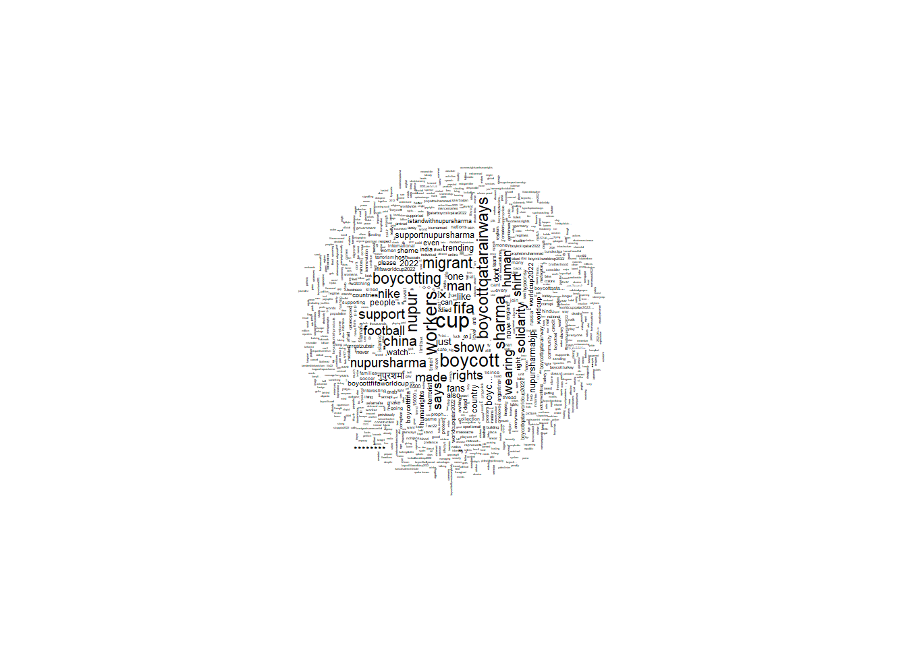

Rerun programs in Gentle Introduction to Machine Learning notebook (https://datageneration.org/gentlemachinelearning/module4_unsupervisedlearning)
Hint: read the online notebook and download the R programs in that class GitHub
Can you apply these methods on your own data?
Post output to own website
load
# install and load pacman for package managementif (!require("pacman", character.only =TRUE)) install.packages("pacman")
Loading required package: pacman
library(pacman)# load libraries using pacmanp_load("Hmisc", "tidyverse","tidytext","XML","wordcloud","RColorBrewer","NLP","tm","quanteda","quanteda.textstats" ,"rtweet","igraph","ggraph","reshape2","ggridges","lubridate","maps","syuzhet","textdata","easypackages", "boot","kknn","caret","leaps", "stargazer","corrplot", "xtable")
# tweets that mention "boycott"tweets_boycott <-read.csv("https://shawnnstewart.github.io/test_data/tweets_boycott.csv?raw=true")# NRC lexiconnrc <-get_sentiments("nrc") #from tidytext#NOTE if problems loading: PC/New versions of R studio require "read.csv" to correctly call the dataset. Older versions require "read_csv".
tweets <- tweets_boycott %>%mutate(text =gsub("http\\S+", "", text)) %>%# remove URLsmutate(text =gsub("@\\S+", "", text)) %>%# remove mentionsfilter(lang =="en") # keep only English tweets, note for boycott it's already filtered
# unnest your tweets so that there is one word per linetweets_tidy <- tweets |>unnest_tokens(word, text)tweets_tidy <- tweets_tidy |>anti_join(stop_words)
nrcjoy <-get_sentiments("nrc") %>%filter(sentiment =="joy")# This creates a new column called "sentiment" that has a cell value of "joy" or "NA". We can turn this into a binary variable instead. tweets_joy <- tweets_tidy %>%full_join(nrcjoy) |>rename(joy = sentiment) |>mutate(joy =ifelse(joy !="", 1, 0))
Joining with `by = join_by(word)`
# first, get the list of emotions/polarities we want to split byemotions <-distinct(nrc, sentiment)# then, we want to make a function that takes an emotion and a dataset and returns a column in that dataset with a binary variable for each word, saying which emotions it is associated with. The function will need the name of the emotion as it appears in the lexicon and assums the dataset is unnested at the word level. # We give it a unique name to avoid issues with downloaded libraries and naming conflicts. We also use "emo" instead of "sentiment" so it does not cause conflicts with the default name of columns in NRC. # lexicon and emo should be strings, like "nrc" and "disgust" because they will be fed into another function. This function will take "nrc" as the default lexicon. emo_column <-function(df, emo, lexicon ="nrc"){# we are first going to extract just those sentiment words from lexicon# let's give our subset a name lexicon_subset <-paste0(lexicon,"_", emo) lexicon_subset <-get_sentiments(lexicon) %>%filter(sentiment == emo) df <- df %>%full_join(lexicon_subset) |>rename({{emo}} := sentiment) |>mutate(!!emo :=ifelse(is.na(!!sym(emo)), 0, 1)) return(df)}# now that the function works, we run it through a for loop to create columns for each emotion/polarity in nrc# get list of emotions from the nrc lexiconemotions_list <-unique(nrc$sentiment)for(emotion in emotions_list){ tweets_tidy <-emo_column(tweets_tidy, emotion)}
Joining with `by = join_by(word)`
Joining with `by = join_by(word)`
Joining with `by = join_by(word)`
Joining with `by = join_by(word)`
Joining with `by = join_by(word)`
Joining with `by = join_by(word)`
Joining with `by = join_by(word)`
Joining with `by = join_by(word)`
Joining with `by = join_by(word)`
Joining with `by = join_by(word)`
# get sums of emotion words grouped by tweet # we also add a column with the cleaned tweet texttweets_tidy_sum <- tweets_tidy |>group_by(id, author_id, conversation_id) |> dplyr::summarize(negative =sum(negative),positive =sum(positive),fear =sum(fear),sadness =sum(sadness),anger =sum(anger),disgust =sum(disgust),trust =sum(trust),surprise =sum(surprise),joy =sum(joy),anticipation =sum(anticipation),text =paste(word, collapse=" ") )
`summarise()` has grouped output by 'id', 'author_id'. You can override using
the `.groups` argument.
#Humza: exploration and descriptive statistics for tweets_tidy_sumView(tweets_tidy_sum)#head(tweets_tidy_sum)
gropd_df [74,968 × 14] (S3: grouped_df/tbl_df/tbl/data.frame)
$ id : num [1:74968] 5.63e+17 5.64e+17 5.68e+17 5.68e+17 5.70e+17 ...
$ author_id : num [1:74968] 1.16e+09 1.39e+09 1.53e+08 2.75e+08 2.30e+08 ...
$ conversation_id: num [1:74968] 5.63e+17 5.64e+17 5.68e+17 5.68e+17 5.70e+17 ...
$ negative : num [1:74968] 0 0 1 0 0 0 2 2 1 0 ...
$ positive : num [1:74968] 1 1 1 2 2 1 1 0 1 0 ...
$ fear : num [1:74968] 0 0 1 0 1 0 1 0 0 0 ...
$ sadness : num [1:74968] 0 0 1 0 0 0 2 0 0 0 ...
$ anger : num [1:74968] 0 1 1 0 0 0 2 1 0 0 ...
$ disgust : num [1:74968] 0 0 1 0 0 0 1 1 0 0 ...
$ trust : num [1:74968] 0 1 1 2 2 0 0 1 1 0 ...
$ surprise : num [1:74968] 0 1 0 2 0 0 0 0 0 0 ...
$ joy : num [1:74968] 1 1 0 2 1 0 1 0 0 0 ...
$ anticipation : num [1:74968] 0 1 0 2 1 0 1 0 0 0 ...
$ text : chr [1:74968] "tim cahill jump" "money buy" "explain 12 gwen christmas ruined" "deal nov dec mls labor talks update" ...
- attr(*, "groups")= tibble [74,968 × 3] (S3: tbl_df/tbl/data.frame)
..$ id : num [1:74968] 5.63e+17 5.64e+17 5.68e+17 5.68e+17 5.70e+17 ...
..$ author_id: num [1:74968] 1.16e+09 1.39e+09 1.53e+08 2.75e+08 2.30e+08 ...
..$ .rows : list<int> [1:74968]
.. ..$ : int 1
.. ..$ : int 2
.. ..$ : int 3
.. ..$ : int 4
.. ..$ : int 5
.. ..$ : int 6
.. ..$ : int 7
.. ..$ : int 8
.. ..$ : int 9
.. ..$ : int 10
.. ..$ : int 11
.. ..$ : int 12
.. ..$ : int 13
.. ..$ : int 14
.. ..$ : int 15
.. ..$ : int 16
.. ..$ : int 17
.. ..$ : int 18
.. ..$ : int 19
.. ..$ : int 20
.. ..$ : int 21
.. ..$ : int 22
.. ..$ : int 23
.. ..$ : int 24
.. ..$ : int 25
.. ..$ : int 26
.. ..$ : int 27
.. ..$ : int 28
.. ..$ : int 29
.. ..$ : int 30
.. ..$ : int 31
.. ..$ : int 32
.. ..$ : int 33
.. ..$ : int 34
.. ..$ : int 35
.. ..$ : int 36
.. ..$ : int 37
.. ..$ : int 38
.. ..$ : int 39
.. ..$ : int 40
.. ..$ : int 41
.. ..$ : int 42
.. ..$ : int 43
.. ..$ : int 44
.. ..$ : int 45
.. ..$ : int 46
.. ..$ : int 47
.. ..$ : int 48
.. ..$ : int 49
.. ..$ : int 50
.. ..$ : int 51
.. ..$ : int 52
.. ..$ : int 53
.. ..$ : int 54
.. ..$ : int 55
.. ..$ : int 56
.. ..$ : int 57
.. ..$ : int 58
.. ..$ : int 59
.. ..$ : int 60
.. ..$ : int 61
.. ..$ : int 62
.. ..$ : int 63
.. ..$ : int 64
.. ..$ : int 65
.. ..$ : int 66
.. ..$ : int 67
.. ..$ : int 68
.. ..$ : int 69
.. ..$ : int 70
.. ..$ : int 71
.. ..$ : int 72
.. ..$ : int 73
.. ..$ : int 74
.. ..$ : int 75
.. ..$ : int 76
.. ..$ : int 77
.. ..$ : int 78
.. ..$ : int 79
.. ..$ : int 80
.. ..$ : int 81
.. ..$ : int 82
.. ..$ : int 83
.. ..$ : int 84
.. ..$ : int 85
.. ..$ : int 86
.. ..$ : int 87
.. ..$ : int 88
.. ..$ : int 89
.. ..$ : int 90
.. ..$ : int 91
.. ..$ : int 92
.. ..$ : int 93
.. ..$ : int 94
.. ..$ : int 95
.. ..$ : int 96
.. ..$ : int 97
.. ..$ : int 98
.. ..$ : int 99
.. .. [list output truncated]
.. ..@ ptype: int(0)
..- attr(*, ".drop")= logi TRUE
#descrip stats - mean #Summary of the Text: mean for negative and positive are almost the same#words associated with trust, mean .401, are most common in the 8 emotions#words associated with surprise, mean 0.1149, are least common in the 8 emotionssummary(tweets_tidy_sum)
id author_id conversation_id negative
Min. :5.633e+17 Min. :1.910e+04 Min. :1.306e+10 Min. : 0.0000
1st Qu.:1.534e+18 1st Qu.:1.012e+09 1st Qu.:1.534e+18 1st Qu.: 0.0000
Median :1.594e+18 Median :1.061e+18 Median :1.594e+18 Median : 0.0000
Mean :1.534e+18 Mean :8.022e+17 Mean :1.533e+18 Mean : 0.6332
3rd Qu.:1.595e+18 3rd Qu.:1.430e+18 3rd Qu.:1.595e+18 3rd Qu.: 1.0000
Max. :1.619e+18 Max. :1.615e+18 Max. :1.619e+18 Max. :16.0000
NA's :1 NA's :1 NA's :1 NA's :1
positive fear sadness anger
Min. : 0.0000 Min. :0.0000 Min. :0.0000 Min. : 0.0000
1st Qu.: 0.0000 1st Qu.:0.0000 1st Qu.:0.0000 1st Qu.: 0.0000
Median : 0.0000 Median :0.0000 Median :0.0000 Median : 0.0000
Mean : 0.6116 Mean :0.3373 Mean :0.2645 Mean : 0.2796
3rd Qu.: 1.0000 3rd Qu.:1.0000 3rd Qu.:0.0000 3rd Qu.: 0.0000
Max. :10.0000 Max. :8.0000 Max. :8.0000 Max. :10.0000
NA's :1 NA's :1 NA's :1 NA's :1
disgust trust surprise joy
Min. :0.0000 Min. :0.0000 Min. :0.0000 Min. :0.0000
1st Qu.:0.0000 1st Qu.:0.0000 1st Qu.:0.0000 1st Qu.:0.0000
Median :0.0000 Median :0.0000 Median :0.0000 Median :0.0000
Mean :0.2548 Mean :0.4019 Mean :0.1149 Mean :0.2666
3rd Qu.:0.0000 3rd Qu.:1.0000 3rd Qu.:0.0000 3rd Qu.:0.0000
Max. :8.0000 Max. :8.0000 Max. :4.0000 Max. :9.0000
NA's :1 NA's :1 NA's :1 NA's :1
anticipation text
Min. : 0.0000 Length:74968
1st Qu.: 0.0000 Class :character
Median : 0.0000 Mode :character
Mean : 0.3029
3rd Qu.: 0.0000
Max. :380.0000
#use summary(tweets_tidy_sum) to add table with mean of each category listing from least to most#pos <-sort(tweets_tidy_sum$positive, decreasing =TRUE)summary(pos)
Min. 1st Qu. Median Mean 3rd Qu. Max.
0.0000 0.0000 0.0000 0.6116 1.0000 10.0000
barplot(pos)
#neg <- tweets_tidy_sum$negativesummary(neg)
Min. 1st Qu. Median Mean 3rd Qu. Max. NA's
0.0000 0.0000 0.0000 0.6332 1.0000 16.0000 1
barplot(neg)
#more negative than positive (by more than 1000) as expected get_sentiments("nrc") %>%filter(sentiment %in%c("positive", "negative")) %>%count(sentiment)
# A tibble: 2 × 2
sentiment n
<chr> <int>
1 negative 3316
2 positive 2308
Warning in wordcloud(words = wordCorpus, scale = c(5, 0.1), max.words = 1000, :
boycottqatar2022 could not be fit on page. It will not be plotted.
### Here's one with a lot more stop words. It shows words beyond boycott and qatar but may be too small to explore. Putting the code in here so we can use it if we want, or remove if we don't.###nohandles <-str_replace_all(tweets$text, "@\\w+", "")wordCorpus <-Corpus(VectorSource(nohandles))wordCorpus <-tm_map(wordCorpus, removePunctuation)
Warning in tm_map.SimpleCorpus(wordCorpus, removePunctuation): transformation
drops documents
Warning in wordcloud(words = wordCorpus, scale = c(5, 0.1), max.words = 1000, :
boycottqatar2022 could not be fit on page. It will not be plotted.

# Using some of our earlier versions of code to create the prepared data for the term document matrix# let's use our tidy data to put the tweets back together, minus the stop wordstweets_tidy_cluster <- tweets_tidy |>group_by(id, author_id, conversation_id) |>summarize(text =paste(word, collapse=" "))
`summarise()` has grouped output by 'id', 'author_id'. You can override using
the `.groups` argument.
###Again we can use/lose any of this, but this is an exploration of additional ways to visualizae the dendrogram to attempt to make it more interpretable### # plot the dendrogramplot(fit, hang =-1, cex =0.6)
plot(fit, type ="rectangle", ylab ="Height")
Warning in graphics:::plotHclust(n1, merge, height, order(x$order), hang, :
graphical parameter "type" is obsolete
Warning in graphics:::plotHclust(n1, merge, height, order(x$order), hang, :
graphical parameter "type" is obsolete
Warning in axis(2, at = pretty(range(height)), ...): graphical parameter "type"
is obsolete
Warning in title(main = main, sub = sub, xlab = xlab, ylab = ylab, ...):
graphical parameter "type" is obsolete